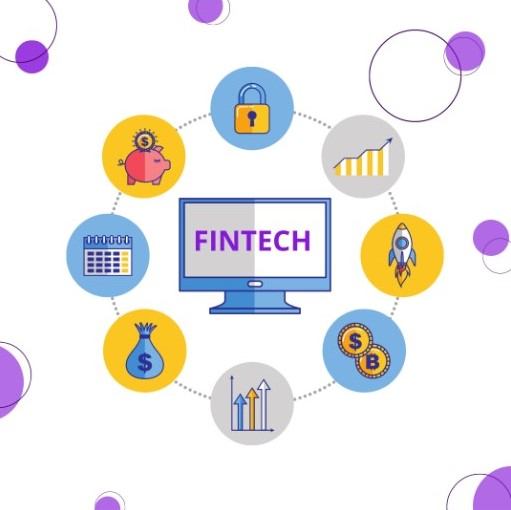

Tecnología Financiera
La tecnología financiera es el motor que impulsa la transformación económica, donde cada innovación es una oportunidad para alcanzar nuevas alturas en la gestión inteligente del dinero y la creación de un futuro financiero más inclusivo y próspero para todos.
¿Qué es la Tecnología Financiera?
La tecnología financiera busca mejorar y optimizar diversos aspectos del sistema financiero, como la prestación de servicios bancarios, la inversión, los préstamos, los seguros y los pagos. Utiliza herramientas como aplicaciones móviles, inteligencia artificial, análisis de datos, blockchain y otras tecnologías emergentes para simplificar procesos, reducir costos y brindar una experiencia más personalizada a los usuarios.
La tecnología financiera representa una convergencia entre el mundo de las finanzas y la innovación tecnológica, con el objetivo de transformar la manera en que las personas y las empresas gestionan, acceden y utilizan los servicios financieros.
La tecnología financiera, también conocida como FinTech (por sus siglas en inglés, Financial Technology), se refiere al uso de la innovación tecnológica para proporcionar servicios financieros de manera más eficiente, accesible y conveniente.
Esto incluye una amplia gama de aplicaciones como:
- Plataformas de Pago Movil.
- Banca en Linea.
- Prestamos Peer-to-Peer.
- Gestión de Inversiones Automatizada.
- CriptomonedaS.
Áreas Clave
- Pagos y Transferencias
Las soluciones fintech en este ámbito incluyen aplicaciones de pago móvil, billeteras digitales, sistemas de transferencia de dinero internacional y plataformas de pago entre pares (P2P). Estas tecnologías permiten a los usuarios realizar transacciones de manera rápida, segura y conveniente, a menudo eliminando la necesidad de utilizar efectivo o cheques.
- Préstamos y Financiamiento
Fintech ha transformado el proceso de préstamos y financiamiento, facilitando la obtención de crédito para individuos y empresas. Plataformas de préstamos peer-to-peer, crowdfunding, y servicios de préstamos basados en algoritmos y análisis de datos son ejemplos de cómo la tecnología está democratizando el acceso al capital.
- Gestión de Inversiones
La gestión de inversiones también ha sido impactada por fintech. Plataformas de asesoramiento financiero automatizado (robo-advisor), aplicaciones de trading móvil, y algoritmos de análisis predictivo están cambiando la forma en que las personas invierten y gestionan sus carteras, ofreciendo opciones más accesibles y personalizadas.
- Banca Digital
Las instituciones financieras tradicionales y neobancos (bancos digitales) están adoptando tecnologías fintech para ofrecer servicios bancarios en línea más eficientes y centrados en el cliente. Esto incluye la apertura de cuentas digitales, la gestión de cuentas, el acceso a préstamos y otros servicios financieros a través de aplicaciones móviles y plataformas en línea.
- Criptomonedas y Blockchain
Las criptomonedas y la tecnología blockchain están revolucionando la forma en que se realizan las transacciones y se gestionan los activos financieros. Estas tecnologías ofrecen características como seguridad mejorada, transparencia, y la capacidad de realizar transacciones de forma descentralizada, sin la necesidad de intermediarios tradicionales.
- Seguros
Fintech también está transformando el sector de seguros con soluciones innovadoras, como seguros bajo demanda, comparadores de seguros en línea, y plataformas de gestión de riesgos que utilizan análisis de datos avanzados para ofrecer cobertura personalizada y precios competitivos.
Servicios
A continuación, 6 empresas financieras mas importantes en México que utilizan tecnología financiera (Fintech) para ofrecer una variedad de servicios innovadores.
Square
Square es conocida por su lector de tarjetas de crédito móvil que permite a los comerciantes aceptar pagos con tarjeta a través de dispositivos móviles. Además, Square ofrece servicios financieros adicionales, como préstamos para pequeñas empresas y una aplicación de pagos peer-to-peer llamada Cash App.
Stripe
Stripe es una plataforma de pagos en línea que facilita a las empresas aceptar pagos por Internet. Ofrece una API que permite a las empresas integrar fácilmente la funcionalidad de pagos en sus sitios web o aplicaciones móviles.
RobinHood
Robinhood es una aplicación de trading de acciones y criptomonedas que ha popularizado la inversión sin comisiones. Permite a los usuarios comprar y vender acciones, ETFs y criptomonedas sin comisiones, y ofrece una interfaz de usuario intuitiva y accesible.
Social Finance
SoFi es una empresa fintech que ofrece una variedad de servicios financieros, incluidos préstamos estudiantiles, refinanciamiento de préstamos estudiantiles, préstamos personales, hipotecas y gestión de inversiones. También ofrece cuentas corrientes y de ahorro, así como tarjetas de crédito.
Revolut
Revolut es una plataforma financiera que ofrece una variedad de servicios bancarios y de pago a través de una aplicación móvil. Permite a los usuarios abrir cuentas corrientes y de ahorro, cambiar divisas extranjeras, realizar pagos en línea y en persona, invertir en acciones y criptomonedas, y más.
Betterment
Betterment es un servicio de asesoramiento financiero automatizado (robo-advisor) que ayuda a los usuarios a gestionar sus inversiones de manera eficiente y diversificada. Utiliza algoritmos para proporcionar recomendaciones de inversión personalizadas y ajustar automáticamente las carteras de los usuarios según sus objetivos y tolerancia al riesgo.
Preguntas Frecuentes
¡Encuentra respuestas rápidas a tus preguntas más comunes!
Contacto
Para más información acerca de FinTech envíanos un mensaje.
Ubicación:
Blvd. Gral. Marcelino García Barragán 1421, Olímpica, 44430 Guadalajara, Jal.
Email:
antonio.gojim15@gmail.com
Llamadas:
+52 341 140 8293
Datos:
Romario Antonio Gomez Jimenez
Materia: Programación para Internet.